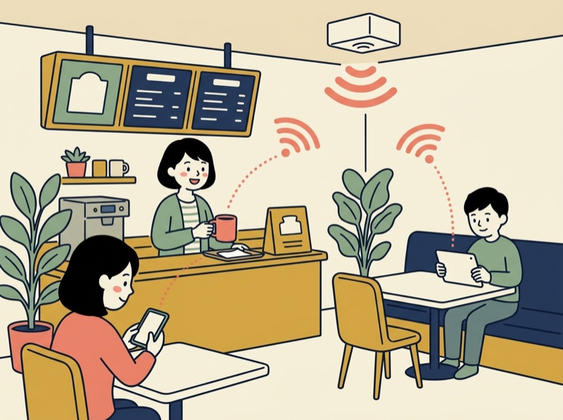
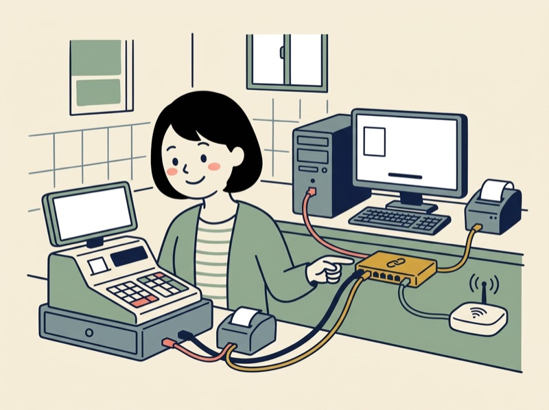
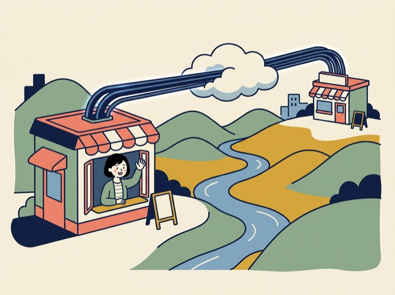
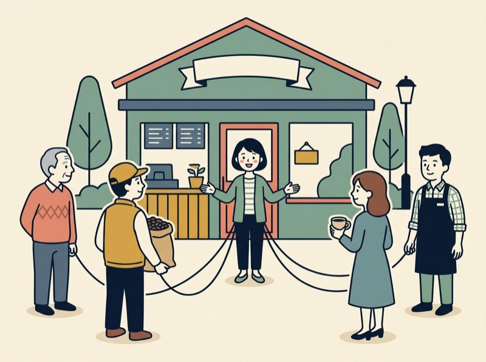
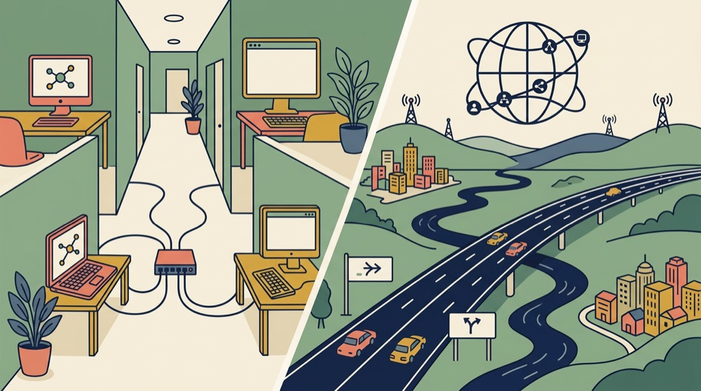

🎮 用語シューティング（1人用のゲーム）
画面に出る「意味」に合う用語の的を撃つゲームです。授業の中で2回（ステージ1・ステージ2）遊びます。点数は記録されません。試験の点数とも関係なく、用語を覚えるための練習です。ゲームの画面も、ブラウザの翻訳で意味を母語にできます（用語は日本語のまま表示されます）。音は初めは出ません。
→ ゲームを開くこの回のゴール
- LANとWANの違い（つなぐ範囲）を、例を使って説明できる
- 有線LANと無線LANの違いを言え、アクセスポイントとSSIDの役割を説明できる
- ルーターとスイッチングハブの役割の違いを説明できる
- お店（または自分の家）のネットワークの構成を、機器の名前を使って図にできる
- ステークホルダーの意味を言い、ネットワークにつながる人と組織を例に挙げられる
- 過去問（令和7年度）を、問い方の型を使って解く
授業の流れ
2コマ連続（90分 + 90分 = 計180分）。休憩10分は授業時間に含めません。🎮のブロックは、ゲームで遊ぶ時間です。
前回の復習テスト → カフェを開くAさんと、お店に関わる人たち
前回の復習テスト（約10分：テスト約5分＋解説の確認約5分）
前回（第4回）の内容を、1週間たって、どれだけ覚えているかを確かめる5問（約5分）。点数を競うものではない。覚えていることと、忘れていることを、自分で知るためのテスト。送信すると、点数と、正解・解説が表示される。そのあと、間違えた問題の解説を読む。分からないところは、隣の人か先生に聞く。
今日のストーリー：駅前にカフェを開く（約10分）
Aさんが、駅前に、小さなカフェを開く（架空の話）。お店で、ネットワークが必要になる場面を、順番に読む。

1. お客さんに、Wi-Fiを使ってほしいお客さんのスマートフォンやタブレットを、電波でネットワークにつなぎたい。
2. 店の中の機械を、つなぎたいレジ、パソコン、プリンター。店の中の機械を、ケーブルでつないで、いっしょに使いたい。
3. 離れた2号店と、つなぎたい歩いては行けない場所にある2号店と、売上のデータを共有したい。店の外の、広い範囲の接続が必要。
4. お店に関わる人たちがいるお客さん、働く人、豆を届けてくれる会社、近所の人……。お店は、たくさんの人と組織に関わっている。
1は無線LAN、2は有線LAN、3はWANの話。4はステークホルダー。順番に学ぶ。
ステークホルダー：お店に関わる人たち（約10分、教科書 p.018-021）
ステークホルダーは、企業に関わる人や組織のこと（利害関係者ともいう）。顧客（お客さん）、従業員、株主、取引先、地域社会などが例（環境省の資料も、この5つを重要なステークホルダーの例に挙げている。確認日：2026-10-28）。企業は、これらの人たちと関わりながら活動している。
ネットワークは、この「関わり」を支える道具になる。下の図で、人ごとに、どのネットワークでつながるかを見る。
お店に関わる人と、つながるネットワーク
ペアで話す（約5分）：自分が、スマートフォンでWi-Fiを使うのは、どんな場所か（学校・家・お店・駅など）。そのWi-Fiを用意している人は、誰か。日本語で話す。
今日の地図（約5分）
カフェのネットワークを作る4つの場面
LANとWAN → 有線と無線 → 🎮ゲーム①（テクノロジ系：ネットワーク 教科書 p.320-324）
① LANとWAN：つなぐ範囲の違い（約15分）
ネットワークは、つなぐ範囲で、2つに分けて呼ぶ。
LANとWANの違い

LAN
同じ建物や敷地の中など、せまい範囲のネットワーク。
WAN
離れた場所どうしをつなぐ、広い範囲のネットワーク。
総務省の用語集は、WANを「電話回線や専用線などを使って、本社と支社間など離れた場所にある LAN 同士を接続するためのネットワーク」と説明している（確認日：2026-10-28）。カフェでは、店の中がLAN、店の外とつなぐ部分がWAN。
② 有線LANと無線LAN（約20分）
LANは、つなぎ方でも、2つに分けられる。
有線LAN
LANケーブルで、機器をつなぐ。
無線LAN
電波で、機器をつなぐ。Wi-Fiとも呼ばれる。
-
アクセスポイント
無線LANの機器（スマートフォン、パソコンなど）を、電波でネットワークにつなぐ役の機器。店の天井などに置かれることがある。試験のシラバスでは「AP（アクセスポイント）」と書かれる。
-
SSID
無線LANのネットワークの名前。スマートフォンのWi-Fiの一覧に出る名前が、これ。近くに複数の無線LANがあるとき、どれにつなぐかを選ぶのに使う。試験のシラバスの用語例には「ESSID」と書かれている。
電波は、壁の外にも届くことがある。だから無線LANは、誰がつなげるかの管理が大切になる。第4回で学んだ、暗号化（WPA2など）がここで使われる。
手を動かす：自分のスマートフォンで、SSIDを見る（約5分）
- スマートフォンのWi-Fiの設定画面を開く。近くにあるSSID（ネットワークの名前）の一覧が出る
- 自分が今つないでいるSSIDは、どれか。名前の数は、いくつあるか
- 隣の人と、見えているSSIDを、比べて話す（つなぐ前に、誰が用意したネットワークか確かめる。知らないSSIDには、つながない）
🎮 ゲーム①：用語シューティング ステージ1（約10分）
ここまでに出た用語（LAN・WAN・有線LAN・無線LAN・アクセスポイント・SSID・ステークホルダー）を、ゲームで確かめる。画面の「意味」を読んで、合う用語の的を撃つ。点数は記録されない。最初は音が出ない。間違えた用語は、最後の画面に一覧が出る。
進め方：1回は約2分。目標は「ランクA以上」（7問中6問以上）。終わったら、間違えた用語の一覧を、下の用語カードで確かめて、もう一度遊ぶ。ランクAが出たら、隣の人に、間違えやすかった用語を説明する。ページを開くと、「スタート」ボタンが出る。翻訳を使う人は、翻訳してから押す。
→ ステージ1を始めるペアで確かめる（約5分）：ゲームで間違えた用語を、1つ選ぶ。もう1人に、やさしい日本語で意味を説明する。説明できたら、反対にする。
ネットワーク機器の役割 → 構成を図にする → 🎮ゲーム②（テクノロジ系：ネットワーク 教科書 p.325-328）
③ ネットワークをつくる機器（約20分）
カフェのネットワークは、次の機器でできている。それぞれの役割を、図と合わせて見る。
カフェのネットワークの構成
-
ルーター
ネットワークとネットワークをつなぐ機器。データを送る道すじ（行き先）を決める。店のLANを、店の外のWAN・インターネットにつなぐ出入口になる。
-
スイッチングハブ
同じLANの中で、機器どうしをつなぐ機器。LANケーブルの差し込み口がたくさんある。試験のシラバスでは「ハブ」「スイッチ」と書かれる。
-
LANケーブル
有線LANで、機器と機器（または機器とスイッチングハブ）をつなぐ、ケーブル。
区別のしかた：ルーターは「ネットワークの間をつなぐ」、スイッチングハブは「同じネットワークの中で機器をつなぐ」、アクセスポイントは「電波で機器をつなぐ」。
④ ワーク：自分の家（または寮）のネットワークを図にする（約20分）
自分の家（または寮・アパート）のネットワークを、ノートや、描画ツールで図にする。ペアで、見せ合って話す。
- インターネットに出る、出入口の機器は何か（ルーターなど）。名前や形を思い出して、図に描く
- そこに、何がつながっているか（スマートフォン、パソコン、ゲーム機、テレビなど）。有線か無線かを、線の種類で区別する
- 図の中で、LANの部分と、WANの部分に、印をつける
- 分からない機器があれば、ペアか先生に聞く。「SSID」は、自分のスマートフォンのWi-Fi画面で見られる
答えの例を見る
- 出入口の機器：回線につながる、ルーター（回線の会社から借りた機器と、自分で買ったルーターが、別々のことがある）。
- 家庭では、ルーター・スイッチングハブ・アクセスポイントの機能が、1つの箱にまとまっていることがある（一例。機器によって違う）。
- スマートフォンやパソコンは無線LAN、デスクトップのパソコンやテレビは有線LAN、というように、混ざっていてよい。
- 箱から家の中がLAN、箱から外の回線がWAN。
🎮 ゲーム②：用語シューティング ステージ2（約10分）
今日の用語（ルーター・スイッチングハブも追加）と、第4回までの用語が混ざる。的が降りてくる速さも上がる。ライフは3つ。最後の画面に、間違えた用語の一覧が出る。ここでも、点数は記録されない。
進め方：1回は約2分。目標は「ランクA以上」（10問中8問以上）。何度でも挑戦してよい。終わったら、間違えた用語の一覧を用語カードで確かめる。「スタート」ボタンを押すまで、時間は進まない。
→ ステージ2を始める過去問演習 → 用語を説明し合う → 確認テスト（1回目）
過去問演習（約15分）：今日の「ネットワークの構成」とつながる問題を、問い方の型を使って解く。
令和7年度の公開問題（問1〜100）には、LANとWANの違いを直接聞く問題が見つからなかった（確認日：2026-10-28）。そこで、今日の範囲に近い問57と、第4回で解いた問90を、今日の言葉で読み直す。
【例題①】問57 HTTP プロキシサーバの機能に関する記述として，適切なものはどれか。
出典：令和7年度 ITパスポート試験 公開問題 問57（テクノロジ系。問題文・選択肢は原文のまま）
自分で選んだあとに、答えと解説を見る
正解：イ（型：説明文から、用語の役割を選ぶ）。プロキシサーバは、パソコンの代わりに、インターネット上のWebサーバへつなぐ「代理人」。パソコンとWebサーバの間に入って、データを中継する。LANの中のパソコンが、LANの外（インターネット）とつながるときに、間に置かれることがある。プロキシは、試験のシラバスの用語例に出てくるが、今日の用語カードには入れていない。ア・ウ・エは、別の役割の説明。アはIPアドレスを配る仕組み、ウはURLからIPアドレスを調べる仕組み（DNS。第6回で学ぶ）、エは検索結果の順位に関わる話。選択肢の「何をするか」の部分を、1つずつ確かめて選ぶ。
【例題②・第4回の見直し】問90 無線LANのセキュリティ対策に関する記述として，適切なものはどれか。
出典：令和7年度 ITパスポート試験 公開問題 問90（テクノロジ系。問題文・選択肢は原文のまま。第4回と同じ問題）
自分で選んだあとに、答えと解説を見る
正解：エ（型：用語と説明の組み合わせを選ぶ）。第4回は、WPA2（暗号化）に合う選択肢から選んだ。今日は、ほかの選択肢も、今日の言葉で読み直す。ア・イ・ウは、用語の名前と説明が合っていない。アの「複数のアクセスポイントをグループ化して管理するID」は、ESSIDの説明に当たる（ESSIDは、今日のSSIDと関係の深い言葉。試験のシラバスはESSIDと書く）。つまり、アは、ESSIDの説明に、別の用語の名前（API）をつけた選択肢。イは「ステルス機能」、ウは「MACアドレスで接続を制限する機能」の説明に、別の名前（SSH・VPN）をつけた選択肢。アクセスポイントとSSIDの意味を知っていると、アが「SSIDの説明」だと気づける。
用語を、ペアで説明し合う（約10分）：下の「用語カード」の9つから、3つずつ選び、1人が、やさしい日本語で意味を説明する。もう1人は、どの用語かを当てる。
確認テスト（1回目）（約5分）
今日の内容の5問。点数を競うものではない。今、どこまで分かっているかを、自分で知るためのテスト。分からない問題は、思い出せる範囲で答える。送信すると、点数と、正解・解説が表示される。
振り返り → 用語カードの提出・次回予告
- 振り返り（約3分）：1回目の結果の画面で、点数を覚えて、間違えた問題の解説を読む。分からないところは、隣の人に聞く、または、このページの用語カード・練習クイズ・ゲームで確かめる
- 確認テスト（2回目）は任意：時間がある人、確かめたい人は、下の「任意の取り組み」から受ける
- 用語カード：今回覚えた用語にチェックを入れて、フォームで提出する（約3分）
- 質問と、次回までの課題の確認（約1分）。読むだけの「就活ワンポイント」もある。自分の点数の推移は、「任意の取り組み」の「自分の成績を見る」から、いつでも見られる
- 次回（第6回）：インターネットが動く原理とその先——TCP/IP・IPアドレス・DNS、AI・IoT（テクノロジ系 p.329-345）
用語カード（今日の用語）
用語カードは、今日の授業で出る用語と、その意味のリスト。授業の最後に、フォームで今回覚えた用語にチェックを入れて提出する。用語は日本語のまま覚える。試験は日本語で行われる。
| 用語 | 意味 |
|---|---|
| LAN | 同じ建物や敷地の中など、せまい範囲のネットワーク |
| WAN | 離れた場所にあるLANどうし（本店と2号店など）をつなぐ、広い範囲のネットワーク。電話回線や専用線などを使う |
| 有線LAN | LANケーブルで機器をつなぐLAN |
| 無線LAN | 電波で機器をつなぐLAN。Wi-Fiとも呼ばれる |
| アクセスポイント | 無線LANの機器を、電波でネットワークにつなぐ機器。試験のシラバスでは「AP」とも書かれる |
| SSID | 無線LANのネットワークの名前。試験のシラバスの用語例には「ESSID」と書かれている |
| ルーター | ネットワークとネットワークをつなぎ、データを送る道すじを決める機器 |
| スイッチングハブ | 同じLANの中で、機器どうしをつなぐ機器。LANケーブルをたくさんさせる。試験のシラバスでは「ハブ」「スイッチ」と書かれる |
| ステークホルダー | 企業に関わる人や組織（顧客・従業員・株主・取引先・地域社会など）。利害関係者。試験のシラバスでは「ステークホルダ」（長音なし）と書かれることがある |
練習クイズ（サイト内・記録なし）
確認テストの内容を、自分のペースで練習するためのクイズ（確認テストと同じ内容）。回答はこのページの中で判定されるだけで、どこにも送信・保存されず、成績にも含まれない。何度でも試せる。
Q1LANの説明として，最も適切なものはどれか。
LANは、同じ建物や敷地の中など、せまい範囲のネットワーク。イはWAN、ウはSSID、エはルーターの説明。
Q2本店と，離れた場所にある2号店のように，離れた拠点どうしをつなぐ，広い範囲のネットワークはどれか。
離れた場所どうしをつなぐ、広い範囲のネットワークは、WAN。LANは、同じ建物の中などの、せまい範囲。有線LANは、LANのつなぎ方（ケーブル）の1つ。アクセスポイントは、無線LANの機器をつなぐ機器。
Q3無線LANで，スマートフォンやパソコンを，電波でネットワークにつなぐ役をする機器はどれか。
アクセスポイントは、無線LANの機器を、電波でネットワークにつなぐ機器。スイッチングハブは、有線LANで機器どうしをつなぐ機器。LANケーブルは、有線LANのケーブル。SSIDは、無線LANのネットワークの名前で、機器ではない。
Q4ネットワークとネットワークをつなぎ，データを送る道すじを決める機器はどれか。
ルーターは、ネットワークとネットワークをつなぎ、データを送る道すじを決める機器。スイッチングハブは、同じLANの中で、機器どうしをつなぐ機器。アクセスポイントは、電波で機器をつなぐ機器。LANケーブルは、ケーブル。
Q5ステークホルダーに当たるものとして，最も適切なものはどれか。
ステークホルダー（利害関係者）は、企業に関わる人や組織。顧客・従業員・株主・取引先・地域社会などが例。アはLAN、イは店の外とつながる回線、エはSSIDの話で、どれも人や組織ではない。
任意の取り組み
必須ではありません。時間があるとき、確かめたいときに使います。
用語シューティング（ゲーム）
授業で遊んだゲームを、何度でも遊べます。間違えた用語の一覧を見て、用語カードで確かめると、覚えやすくなります。
確認テスト（2回目）
1回目と同じ5問です（問題の順番は違います）。受けたら、結果の画面の点数を、1回目の点数と自分で比べます。1回目の点数を、覚えておきます。
自分の成績を見る
診断テスト・復習テスト・確認テストの点数の推移と、次に復習するとよい用語を見られます。学校のGoogleアカウントでログインすると、自分の分だけが表示されます。
就活ワンポイント（任意）
授業時間には含めない、読むだけのコラム。成績にも含まれない。今日の言葉を、面接で使う練習。
面接で「学校で学んだこと」を聞かれたら
面接官から、こう聞かれることがある。答えは、3つの順番で話すと、短く、分かりやすくなる（一つの考え方）。下の吹き出しが、順に現れる。
- 例文は一例。自分が実際にしたことを話す。していないことは、言わない。
- 今日の言葉（LAN・WAN・ルーター）を、日本語のまま使えると、ITを学んでいることが伝わる。
- 「自分で図にした」「ゲームで確かめた」のように、自分がしたことを一言入れると、話に説得力が出る。
答え方の順番（結論・理由・まとめ）は、この教材の一つの考え方で、公式のルールではない。IPAは、ITパスポート試験の合格について、「就職活動において、自らの知識を証明し、自己アピールに役立ちます」と紹介している（IPA「合格のメリット」、確認日：2026-10-28。留学生向けに書かれた説明ではない）。
課題・次回までにやること
教科書 p.329-345 を読み、IPアドレスとDNSが、それぞれ何をするものか、確認しておく。第6回の授業の最後に、覚えた用語をフォームで提出する。
練習クイズは、全問正解になるまで繰り返す。ゲームは、最後の画面の「間違えた用語」の一覧を見て、用語カードで確かめる。
スマートフォンのWi-Fiの画面で、近くにあるSSID（ネットワークの名前）を見る。自分が使っているのは、どれか。
参考リンク
- 無線LAN（Wi-Fi）の仕組み総務省「国民のためのサイバーセキュリティサイト」。LAN・無線LANの説明（SSIDにも触れている）
- 用語集（あ行）：アクセスポイント総務省「国民のためのサイバーセキュリティサイト」
- 用語集（ら行）：ルータ総務省「国民のためのサイバーセキュリティサイト」
- 電気通信紛争処理用語集（PDF）総務省。WANの説明（「電話回線や専用線などを使って……」）を確かめた資料
- ステークホルダーエンゲージメント（PDF）環境省。「株主、顧客、従業員、取引先、地域社会などを重要なステークホルダーとして特定することが多く」の記述がある
- ITパスポート試験シラバス（PDF、Ver.6.5）IPA。「ネットワーク方式」の用語例（ハブ・スイッチ・ルーター・有線LAN・無線LAN・ESSID）で、試験での用語の書き方を確かめる
- 【ITパスポート試験】合格のメリットIPA。就活ワンポイントで紹介した記述の出典
- 過去問題 | 試験情報 | IPA公開問題と解答例の一覧。法令に特別の定めがある場合を除き、許諾・使用料は不要（IPA公式）。この授業では、年度と問番号を出典として書く
- 令和7年度 ITパスポート試験 公開問題（PDF）例題の出典
- 令和7年度 ITパスポート試験 公開問題 解答例（PDF）例題の正答の確認